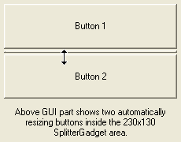

SplitterGadget()
Syntax
Result = SplitterGadget(#Gadget, x, y, Width, Height, #Gadget1, #Gadget2 [, Flags])Description
Creates a Splitter gadget in the current GadgetList. This gadget allows two child gadgets to be resized by the user with a separator bar.
Parameters
#Gadget A number to identify the new gadget. #PB_Any can be used to auto-generate this number. x, y, Width, Height The position and dimensions of the new gadget. #Gadget1, #Gadget2 The gadgets to be placed in the splitter. Flags (optional) Flags to modify the gadget behavior. It can be a combination of the following values: #PB_Splitter_Vertical : The gadget is split vertically (instead of horizontally which is the default). #PB_Splitter_Separator : A 3D-looking separator is drawn in the splitter. #PB_Splitter_FirstFixed : When the splitter gadget is resized, the first gadget will keep its size #PB_Splitter_SecondFixed : When the splitter gadget is resized, the second gadget will keep its size
Return value
Returns nonzero on success and zero on failure. If #PB_Any was used as the #Gadget parameter then the return-value is the auto-generated gadget number on success.
Remarks
A 'mini help' can be added to this gadget using GadgetToolTip().
The following functions can be used to act on a SplitterGadget:
GetGadgetState(): Get the current splitter position, in pixels.
SetGadgetState(): Change the current splitter position, in pixels.
GetGadgetAttribute(): With one of the following attribute:#PB_Splitter_FirstMinimumSize : Gets the minimum size (in pixels) than the first gadget can have. #PB_Splitter_SecondMinimumSize: Gets the minimum size (in pixels) than the second gadget can have. #PB_Splitter_FirstGadget : Gets the gadget number of the first gadget. #PB_Splitter_SecondGadget : Gets the gadget number of the second gadget.SetGadgetAttribute(): With one of the following attribute:#PB_Splitter_FirstMinimumSize : Sets the minimum size (in pixels) than the first gadget can have. #PB_Splitter_SecondMinimumSize: Sets the minimum size (in pixels) than the second gadget can have. #PB_Splitter_FirstGadget : Replaces the first gadget with a new one. #PB_Splitter_SecondGadget : Replaces the second gadget with a new one.Note: When replacing a gadget with SetGadgetAttribute(), the old gadget will not be automatically freed. It will instead be put back on the parent window of the Splitter. This allows to switch gadgets between splitters without the need to recreate any of them. If the old gadget should be freed, its number can first be retrieved with GetGadgetAttribute(), and the gadget freed with FreeGadget() after it has been replaced. Note that a gadget cannot be in two splitters at once. So to move a gadget from one splitter to another, it first needs to be replaced in the first splitter so it is on the main window and then it can be put into the second splitter.
Example
If OpenWindow(0, 0, 0, 230, 180, "SplitterGadget", #PB_Window_SystemMenu | #PB_Window_ScreenCentered) #Button1 = 0 #Button2 = 1 #Splitter = 2 ButtonGadget(#Button1, 0, 0, 0, 0, "Button 1") ; No need to specify size or coordinates ButtonGadget(#Button2, 0, 0, 0, 0, "Button 2") ; as they will be sized automatically SplitterGadget(#Splitter, 5, 5, 220, 120, #Button1, #Button2, #PB_Splitter_Separator) TextGadget(3, 10, 135, 210, 40, "Above GUI part shows two automatically resizing buttons inside the 220x120 SplitterGadget area.",#PB_Text_Center ) Repeat Until WaitWindowEvent() = #PB_Event_CloseWindow EndIf

See Also
GetGadgetState(), SetGadgetState(), GetGadgetAttribute(), SetGadgetAttribute()
Supported OS
All